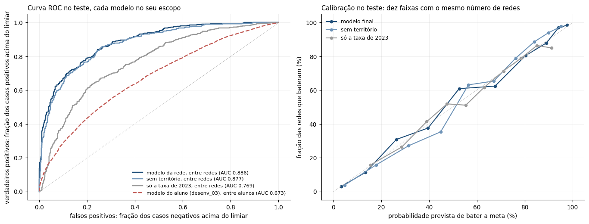

Etapa A tira redundância sem olhar a resposta (ausentes, quase constantes, VIF, correlação). Etapa B elimina passo a passo em cinco rodadas e mantém quem fica no melhor conjunto em pelo menos quatro.
+ UF e região como ponto de partidaTrês famílias comparadas com validação cruzada agrupada por município, pelo critério declarado antes de rodar: menor log-loss, com desempate a favor do modelo mais simples.
0,8968 contra 0,8962 e 0,8886A meta fica em cima da média do país: ali um erro pequeno troca o lado da classificação, e a acurácia passaria a medir sorte. A referência é repetir o ano anterior.
acurácia não é usada
É mais frágil justamente onde a política age. Serve para priorizar, não para julgar gestão.
Nada aqui diz que construir biblioteca alfabetiza: diz que redes com biblioteca vão melhor.
O ano das enchentes. O modelo não sabe da enchente: ler aquilo como problema crônico de gestão seria um erro.
O que se transporta para o próximo ciclo é o método, não os números.
2.380 redes nominais, cada uma com alunos, distância até a meta e quanto moveria a taxa nacional.
reports/redes_risco_2024.csvMunicípios por faixa de probabilidade, do alerta forte ao território sem risco aparente.
51% das crianças abaixo de 50% de chanceCada faixa tem taxa de confirmação conhecida, o que permite dosar intervenção e acompanhamento.
89% de confirmação na faixa mais baixa